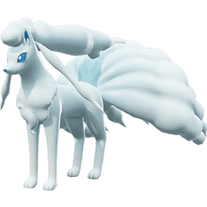

Pikachu

Es obvio que al ser la mascota de la franquicia este seria uno de los mas poderes todo gracias a su buen daño en area, control de esta y poder stunear a sus adversios junto a su facilidad de jugar.

TRUENO: Pikachu ataca con una poderosa descarga eléctrica en un área designada; dañando y aturdiendo a los enemigos en el área durante 1.25 segundos.

RAYO: Pikachu lanza poderosos rayos eléctricos en un área designada durante 2.5 segundos, dañando a los enemigos en el radio cada 0.5 segundos.

ELECTROBOLA: Pikachu lanza una esfera eléctrica al enemigo objetivo, infligiendo daño y paralizando (reduce la velocidad en un 50% durante 2 segundos y reduce la velocidad de ataque en un 10% durante 2 segundos) a todos los enemigos en un pequeño radio alrededor del objetivo al impactar. Inflige daño adicional basado en la vida faltante del enemigo.

PLACAJE ELECTRICO: Pikachu carga contra el enemigo objetivo, volviéndose imparable, dañándolo y lanzándolo al aire durante 1.4 segundos. Luego, Pikachu salta hacia atrás una distancia fija desde el objetivo, en la misma dirección desde la que se acercó. Gana un 25% de velocidad de movimiento durante 2 segundos después de aterrizar.
Ninetales
Ninetales tambien es uno de los mas poderosos talvez no tenga el rango o el daño pero lo que le hace de los mejores es sus habilidad de congelar

Velo Aurora: Ninetales se lanza una corta distancia y crea una aurora centrada en su posición durante 5 segundos; reduciendo el daño recibido por Ninetales y sus aliados dentro del velo en un 35%, curando a Ninetales con cada ataque potenciado y aumentando la velocidad de ataque en un 15%. Mientras Ninetales está dentro de la aurora, la velocidad de movimiento aumenta en un 10% y todos los ataques automáticos se potencian.

Ventisca: Ninetales lanza dos veces en línea. La primera explosión penetra las paredes y ralentiza a los enemigos. La segunda explosión inflige el doble de daño, empuja a los enemigos hacia atrás y, si golpea una pared, crea un área de escarcha en la ubicación del impacto durante 4 segundos; infligiendo daño cada 0,5 segundos y ralentizando a los enemigos en el área un 35% durante 1 segundo en cada tic.

Brillo Magico: Ninetales ataca con un poderoso cono de luz cegadora; dañando y aturdiendo a los enemigos alcanzados durante 0.8 segundos.

Avalancha: Ninetales ataca con una ráfaga de hielo gélido hacia la dirección designada. El hielo daña a los enemigos y forma una pared que no se puede atravesar. Después de un corto tiempo, esta pared se derrite y se derrumba; dañando aún más a los enemigos en un radio alrededor de la pared.
Inteleon
Inteleon tiene las opciones de ser el sniper del equipo para cuasar gran cantidad de daño pero requiriendo gran precision o puede eligir daño directo y continuo

Aguijon letal:Inteleon dispara un aguijón afilado en la dirección designada. El aguijón se detiene en el primer Pokémon que golpea o cuando llega a una pared. Inteleon gana dos contadores críticos si un Pokémon es golpeado o una pared es golpeada. Si golpea a un Pokémon, inflige daño. Si golpea una pared, el tiempo de reutilización de este movimiento se reduce a la mitad e Inteleon es arrastrado a la pared y comienza a camuflarse.
Inteleon se desliza en la dirección designada. Si golpea a un Pokémon o una pared, puede deslizarse en una dirección designada por segunda vez. Si Inteleon golpea a un Pokémon mientras se desliza, Inteleon le inflige daño y reduce su velocidad de movimiento en un 30% durante 2 segundos. Cada vez que Inteleon se desliza en una dirección designada, gana un contador crítico. Si Inteleon rebota en una pared o un Pokémon, el tiempo de reutilización actual de Liquidación se reduce en 2 segundos.

Inteleon apunta hasta por 6 segundos y luego dispara, infligiendo daño a los Pokémon oponentes que golpea mientras ignora parcialmente su Defensa Especial en un 15%/20%/25% dependiendo de la distancia (cerca, media, lejos respectivamente). Apuntar reduce la posible dispersión del disparo, alcanzando la máxima precisión después de apuntar durante 1.25 segundos. Cuanto más lejos esté el usuario del Pokémon que golpea, más daño inflige. Se pueden mantener un máximo de tres usos en reserva para este movimiento. Hay un tiempo de reutilización de 1.5 segundos entre usos.
Inteleon comienza a disparar proyectiles de agua al Pokémon designado. Inteleon dispara un total de 8 proyectiles en 1.7 segundos y se ralentiza un 60% mientras dispara. Los proyectiles de agua pueden golpear objetivos distintos del Pokémon designado y solo infligen daño al primer Pokémon que golpean. Si este movimiento golpea al mismo Pokémon 5 veces en un corto período de tiempo, Inteleon infligirá un 20% de daño aumentado a este Pokémon durante 3 segundos.